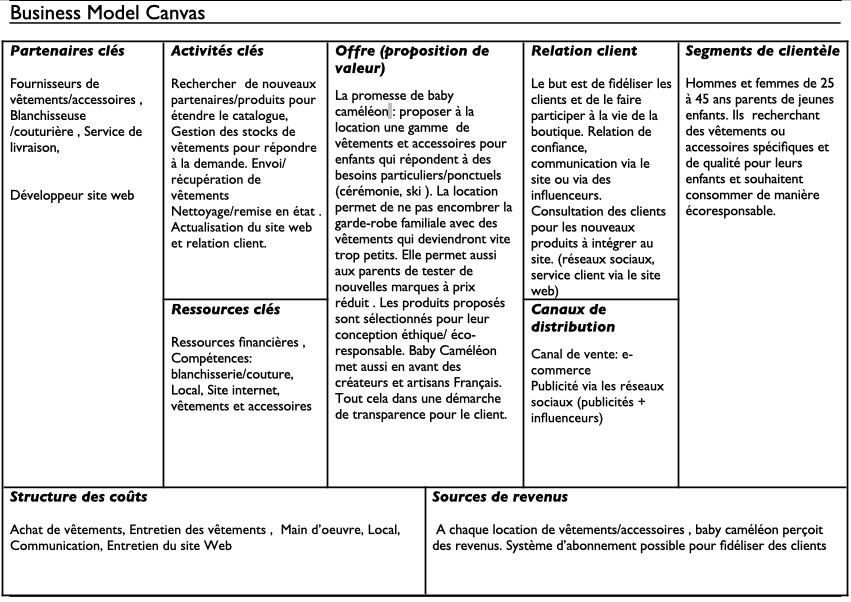
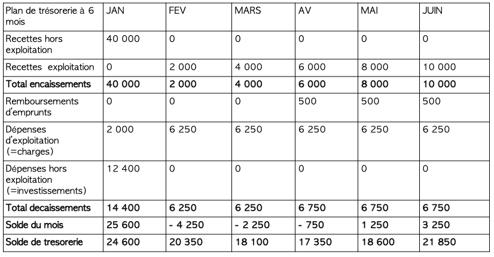

POK 3: BabyCameleon, Business Plan et modélisation Logistique
- Louise Gacoin
Le but de ce POK est de continuer mon projet du POK 2 (BabyCameleon). Pour cela je vais m'intéresser aux enjeux économiques et logistiques du projet.
Sommaire
- Business Model
- Business Plan
- Les partenaires
- Stratégie Supply chain
1.Business Model
Un business model décrit la logique de fonctionnement du projet, comment l’entreprise va créer de la valeur.
Ici on s’asssure du bien fondé de l’entreprise et convaincre les investisseurs de la viabilité du projet.
Voir le MON de Gabriel sur le sujet
On utilise le business model canva :
2. Business Plan
Le business plan est un document qui détail l'objectif du projet et le plan financier sur les premières années. Il est en général présenté aux investisseurs afin de les convaincre d'investir dans le projet. Il permet de:
- Comprendre rapidement de quoi il s'agit, à quel besoin répond le service proposé,
- Connaitre les personnes à l'origine du projet avec leurs motivations,
- Evaluer la valeur et le sérieux de la préparation du projet,
Le business plan contient le business model.
Pour réaliser le mien, je me suis aidé de ces sites:
Sources
Mon Businnes Plan est plus court qu'un Business Plan classique mais il en contient toutes les parties. Je me suis mise en mode role play pour le concevoir (même si j'ai peut-être un peu enjolivé la réalité sur certains points)
Executive summary:
Nos enfants grandissent vite, mais pas leurs habits. En tant que parents, on se retrouve donc à acheter des vêtements qui ne seront porté que quelque fois avant de devenir trop petits. Ce gaspillage est d'autant plus flagrant lorsqu'il s'agit d'habiller nos enfants pour des occasions spéciales telles qu'un marriage ou des vacances au ski.
BabyCameleon, c'est une boutique en ligne qui vous permet de louer des vêtements et accessoires pour enfants de 0 à 6 ans. Les pièces proposées correspondent à tout type de besoins spécifiques: vêtements de cérémonie, d'hiver, déguisements et accessoires pour les vacances. Les produits que nous proposons sont éco-responsables et soutiennent l'artisanat locale grâce à une sélection de vêtement créés en France . Notre offre à la carte vous permet de choisir quand recevoir vos articles et pour combien de temps. Notre objectif est aussi de créer une vraie communauté en impliquant les clients dans le choix des pièces disonibles à la location parexemple.
Le porteur du projet :
La porteuse du projet est une jeune ingénieure bientôt diplômée de Centrale Marseille. Engagée dans la lutte pour le climat, elle veut mener un projet qui lui permette d’agir à son échelle.
Elle a déjà participé à plusieurs Hackathon et connaît la démarche entrepreneuriale.
Elle possède de solides bases en développement informatique et en Web design qui l’aideront à concevoir un site adapté au projet.
Elle est aussi entourée d’un réseau d’entrepreneurs (les Entrep’) qui l’aide à améliorer sans cesse son projet. Elle bénéficie aussi du soutien de ses professeurs et camarades prêts à l’aider à développer les compétences nécessaires à ce projet (logistique notamment).
Présentation générale du projet :
BabyCaméléon est une boutique en ligne qui permet aux parents de louer des vêtements et accessoires pour enfants de 0 à 6 ans qui répondent à des besoins spécifiques ou ponctuels.
Sachant qu’un enfant grandit d’au moins 5cm par an les première années il faut sans cesse renouveler sa garde robe. De plus en plus d’offres de location de vêtements enfants voient donc le jour. BabyCaméléon se démarque par le segment de vêtements et accessoires proposés. En effet nous proposons des produits adaptés aux événements ponctuels: cérémonies, au ski, au soirées déguisées ainsi qu’aux vacances d’été et d’hiver.
La location permet aux familles d’accéder des pièces de qualité à prix réduit. Les clients économisent ainsi de l’argent sans encombrer leurs placards. Cela peut aussi être l’occasion d’essayer des pièces en conditions réelles avant de les acheter.
De plus, BabyCaméléon s’inscrit dans une démarche éthique et eco-responsable. En effet, les vêtements proposés sont principalement issus de créateurs français, favorisant les circuits courts ainsi que l’artisanat. Les matériaux utilisés sont nobles tel que le coton bio et recyclés. Dans une démarche de transparence chaque pièce sera authentifiée grâce à des vignettes (selon les matériaux utilisés, le mode de fabrication…).
La location permet aussi d’éviter le gaspillage et de donner plusieurs vies à chaque pièces. Sachant que l’industrie textile est l’une des industries les plus polluantes au monde, chaque fois qu’un vêtements est loué, on évite une nouvelle fabrication.
BabyCaméléon sera d’abord une boutique virtuelle avec possibilités d’ouverture de boutiques physiques à long terme. Elle promet d’être pratique pour les parents qui recevrons et rendrons leurs produits depuis chez eux.
Le nettoyage et la maintenance des produits sera prise en charge par BabyCaméléon et effectuée par des professionnels.
Partie économique du business plan :
- produit/service :
Les produits loués seront les suivants :
• vêtements de cérémonie ( costumes, robes, manteaux, chapeaux, chaussures)
• vêtements de ski ( combinaisons, manteaux, gants, bonnets )
• déguisements et chaussures
• accessoires ( duvette, sac à langer, matelas/lit de voyage, baignoire nomade…)
- Etude de marché :
Contexte:
En France,le marché de l’habit enfants représente 5 milliards d’euros de chiffre d’affaire chaque année.

Le marché des vêtements enfants s'impose de lui-même, puisque les parents sont obligés de s'adapter à la croissance de leurs enfants et donc de renouveler plus fréquemment les vêtements. La taille du marché est fluctuante, suivant une baisse globale induite par la diminution du taux de natalité en France. C’est un marché très concurrentiel. Le marché de l'occasion est en plein essor sur ce segment, car la perception des articles résiliés a changé dans l'opinion des clients.
L'attention portée à la durabilité, à l'éthique et à l'environnement a révolutionné la façon dont les clients perçoivent et choisissent les marques : l'industrie de la mode a donc évolué ces dernières années pour s'adapter à la nouvelle tendance durable.
Tendances du marché :
- Mode Eco responsable, durable
- Qualité (des matériaux)
- Seconde Main
- Prix raisonnables
Globalement, les consommateurs ne veulent pas acheter des produits trop chers car ils savent qu'il va falloir renouveler le stock très souvent. En outre, il n'en reste pas moins qu'il existe une certaine exigence sur la qualité des produits, avec une tendance bio qui fait clairement son apparition dans les moeurs.
Concurrence:

On observe que les sites proposant la location proposent aussi souvent la vente. Les pièces proposées sont simples, surement ce qui permet d’avoir des prix très bas. (environ 5€/moi la pièce).
La provenance n’est pas indiquée.
Sources
Nos avantages concurrentiel :
Segment de produits unique : vêtements de cérémonie, ski et déguisements et accessoires de vacances
Une offre sur mesure : le large choix de modèles (et de prix) avec des pièces plus simples et d’autres de créateurs. Choix exactes de la durée de location (avec une location à la journée et programmable dans le futur)
- Plan d’action sur 3 ans :
Année 1 : Recherche de partenaires financiers
Recherche de premiers partenaires/ créateurs de vêtements et accessoirs
Recherche d’un local
Recherche d’un partenaire blanchisserie, couture proche du local
création du site web (externalisé)
Promotion par des influenceurs
Année 2 : Ouverture de la boutique
Développement des partenariats avec des créateurs Français
Embauche de personnel pour gérer les commandes
Investissement dans des pubs (Google Ads, Facebook Ads)
Travail e référencement auprès des moteurs de recherche (SEO)
Année 3 : Etude de marché afin d’éventuellement ouvrir une boutique physique
Etude de marché afin d’éventuellement créer nos propres vêtements
Développement des partenariats avec des créateurs Français (selon suggestions de nos clients)
- Stratégie marketing: la stratégie pour attirer et fidéliser la clientèle:
• Feedback : Nous allons constamment interroger nos clients sur la qualité du service mais aussi sur les nouveauté qu’ils souhaiteraient voir dans la boutiques
• SEO : Nous allons travaillé notre stratégie de référencement afin d’avoir du trafic sur notre site
• Pricing : Nous allons offrir une large gamme de prix en fonction de la provenance mais aussi du nombre d’utilisation du produit. Cela nous permettra de toucher un large public
• Marketing Digital : utilisation des réseaux sociaux et partenariats avec des influenceuses. Publicités via googleAds et FacebookAds
- Gestion des risques:

Partie financière du business plan:
L'entreprise sera dans un premier temps gérée par moi seule. Elle sera financée de cette manière:
10 000 € d'apport personnel de capital
30 000 € de prêt
Pour fonctionner il faudra un local et un site internet. La création du site web sera externalisée
Voici un tableau qui récapitule les différents investissements de départ ainsi que les différentes charges
Je n’ai pas inclus de dotation aux amortissements dans mes bilan. Le fait que les habits s’abiment est pris en compte dans les 500€ mensuels dédiés au rachat de nouvelles pièces.
nettoyage+réparation : environ 4€/pièce en considérant que chaque pièce est louée pour 3 jours consécutifs (en moyenne). Cela donne environ 2000€ par mois. On a considéré que 50 pièces seraient louées chaque jour.
envoi et retour : payés par le consommateur
- Bilan prévisionnel :
-
Chiffre d'affaires prévisionnel :
Equivalent de 50 pièces/jours louées, à environ 8 euros la journée
CA mensuel de 50 x 31 x 8= 12 400 €
CA annuel prévu de 12 400 x 12= 148 800 € -
Résultat prévisionnel :

-
Plan de trésorerie:
 -
seuil de rentabilité :

Partie juridique du business plan
Le type d'entreprise créée sera une entreprise individuelle: une EURL(entreprise unipersonnelle à responsabilité limitée) car elle est facile à créer.
De plus, le patrimoine de l'entreprise le patrimoine personnel sont divisés et seuls les biens utiles à l'activité professionnelle pourront être saisi par les créanciers professionnels.
Cette structure permet de limiter les responsabilité sur les apports et envisager l'entrée de nouveaux associés. En contrepartie il faut se soumettre au formalisme lié à la constitution et au fonctionnement d'une société.
3. Les Partenaires
Les partenariats sont un point clés de notre entreprise. Le but est de pouvoir créer des partenariats long terme assurant la qualité de nos services . Pour cela il faudra réaliser un vrai travail en amont pour rechercher les partenaires potentiels. Il faut que les partenaires partagent les valeurs de BabyCaméléon (à savoir : être soucieux de l’environnement et de la qualité des services proposés aux clients. Vouloir encourager l’économie locale). Ces points communs nous permettront d’établir des partenariats durables.
Ces partenariats vont aussi demander du temps et de l’investissement de ma part : il faut créer une vraie relation de confiance avec les partenaires et participer à la vie de leur entreprise ( évènements et autres…)
Les différents partenariats:
Pour les créateurs/boutiques de vêtements et accessoires
Le but pour BabyCaméléon :
Obtenir des produits à mettre en location à prix réduits (voire gratuit?) et qui correspondent aux critères de la boutique ( fabriqués en France ou en Europe, matières écologiques...)
Le choix des partenaires :
Petits créateurs indépendants (et Marques françaises) ciblés. Attention particulière sur les politiques RSE et l’eco responsabilité des partenaires choisis
Bénéfices pour les partenaires:
- Visibilité: mise en avant sur le site web avec une page dédiée à chaque partenaires +lien vers leur boutique + description de leur marque en dessous de leur produis. Mise en avant via des publications sur les réseaux sociaux.
La communication de BabyCameleon se veut transparente. Dans ce sens on peut imaginer des insight dans nos processus qui mettent en avant le travail des créateurs. - Partenariat longue durée avec des rachats à fréquence établie.
- Possibilités d’avoir un pourcentage sur la location de leur articles (suivant le type de réduction accordé)
- Diversification de leur offre avec de la location. BabyCaméléon ne fait que de la location. Nous ne sommes donc pas en concurrence directe avec les marques et site qui vendent des vêtements. De plus la location permettra aux foyers plus modestes de tester les marques ( elles toucheront donc un public plus large).
Pour nos Blanchisseuse et couturière :
Le but pour BabyCaméléon :
Obtenir des services de nettoyage et remise en état de qualité, à prix réduit.
Le choix des partenaires :
Dans un souci de praticité et de réduction des trajets inutiles, il faudra trouver des artisans proches géographiquement du Local de BabyCaméléon. Les partenaires seront des professionnels soucieux du travail bien fait.
Bénéfices pour les partenaires:
- Visibilité: mise en avant sur le site web avec une page dédiée à chaque partenaires. Mise en avant de leur travail via des publications sur les réseaux sociaux.
- Partenariat longue durée avec du travail chaque mois
Pour un service de livraison :
Le but pour BabyCaméléon :
Obtenir un service de confiance pour la livraison/ récupération des pièces à prix raisonnables pour le client. Pour rappel les expéditions seront payés par client.
Le choix des partenaires :
Une grande attention sera accordée aux valeurs et à l’éthique du service. En effet la marque se veut éco responsable donc doit trouver un service de livraison en conséquences.
Bénéfices pour les partenaires:
- Partenariat longue durée avec de nombreuses expéditions chaque mois.
- Visibilité: mise en avant sur le site web avec une page dédiée à chaque partenaires. Mise en avant de leur travail via des publications sur les réseaux sociaux.